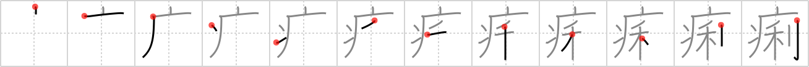

痢
← →
diarrhea

Reading:
On-Yomi: リ
Heisig story:
Sickness . . . profit.
Koohii stories:
1) [nac_est] 7-9-2007(235): For a country full of pay-per-use public toilets, sudden diarrhea is certainly the most profitable sickness!
2) [dingomick] 9-4-2007(86): Caveman doesn't have any skills, so he sells his diarrhea as chili to peasant wheat farmers for an amazing profit.
3) [walexander5] 6-9-2008(38): Diarrhea is a sickness that makes wheat go through me like a saber.
4) [zer0range] 20-4-2009(34): 1. Give Caveman diarrhea 2. ??? 3. PROFIT!
5) [ycomnougue] 11-7-2009(21): Caveman sells his diarrhea to McDonalds so they can make shit burgers. The caveman turns a huge profit from his sickness.